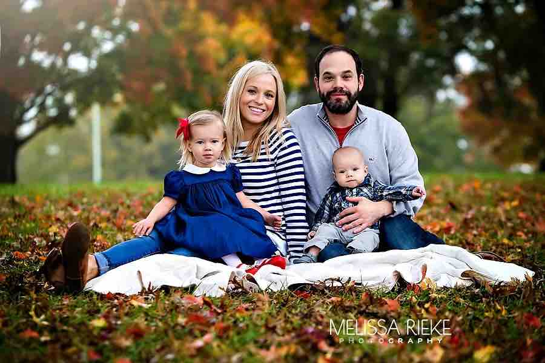

1. Kennis maken met Akmal's familie

| 1. | Akmal en Volida hebben twee kinderen: |
| een dochter en een zoon. | |
| 2. | De dochter heet Umida. |
| Ze is 3 jaar. | |
| De zoon heet Walad. | |
| 3. | Umida en Walad zijn broer en zus. |
| 4. | Heb jij zussen? |
| Hoeveel zussen heb jij? |
| a. | “-s” qóshib | ||
| broer | - | broers | |
| dochter | - | dochters | |
| auto | - | auto’s | |
| b. | “-en” qo’shib | ||
| vrouw | - | vrouwen | |
| groet | - | groeten | |
| dag | - | dagen | |
| c. | Uzundan bir | harf | kesilib |
| zoon | - | zonen | |
| naam | - | namen | |
| jaar | - | jaren | |
| d. | Boshqacha | ||
| zus | - | zussen | |
| kind | - | kinderen |
jij
ik
wij
het
(katje)
hij
ze
ze ---
Eng osoni "men" deb aytish:
"Ik heet Absemi."
"Ik spreek Nederlands."
"Ik ben een man."
"Ik ben 40 jaar."
"Ik ben getrouwd."
"Ik heb een familie."
"Ik heb 4 kinderen."
"Sen" sózi gollandchada ikki shaklda: "je" va "jij"
"Jij heet Layla."
"Jij bent een vrouw."
"Waar kom je vandaan?"
"Heb je kinderen?"
"U" sózi jinsiga qarab ikki xil aytiladi. Erkak bólsa "hij", ayol zotidan bólsalar "ze". "Ze"ning yana "zij" degan shakli ham bor.
(Aytmoqchi, "jij" va "zij" shakllari ushbu sózlarga urgu berish uchun ishlatiladi.)
"Hij heet Botir."
"Zij is een vrouw."
"Spreekt hij Nederlands?"
"Ze heeft geen kinderen"
"Biz" "sizlar" va "ular" kópchilikni ifoda etadigan sózlardir.
"Wij hebben twee kinderen."
"Ze spreken nu Nederlands."
"Jullie zijn nu in Nederland."
"Sizlar hozir Niderlanddasizlar."
Aytmoqchi, "ze"/"zij" sózi sizni biroz yanglishtirishi mumkin. Chunki bu sóz joyida ishlatilishiga qarab yoki "u" degan ma'noda, yoki "ular". Kontekstiga qarab tushunasiz.